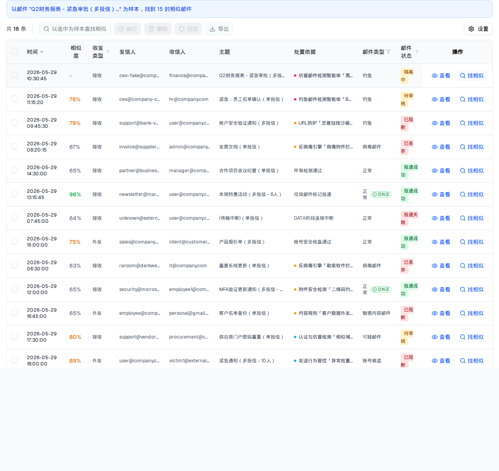

| 所属组件 | 2.3 日志表格 + 2.2 搜索区（联动） |
| 主文件 | index.html#component-2-3 |
| 触发路径 | 行内「找相似」（单样本）/ 工具条「以选中为样本查找相似」（≤10 封，批量样本）/ 详情抽屉「查找相似邮件」 |
时间 | 发信人 | 收信人 | 主题 | 处置依据 | 操作 | |||||
|---|---|---|---|---|---|---|---|---|---|---|
| 2026-05-29 10:30:45 | - | 接收 | ceo-fake@company-security.com | finance@company.com, hr@company.com, admin@company.com, user1@company.com, user2@company.com | Q2财务报表 - 紧急审批（多投信） | 仿冒邮件检测智能体「高管仿冒识别」· 判定为身份仿冒 | 钓鱼 | 隔离中 | ||
| 2026-05-29 11:15:20 | 92% | 接收 | ceo@company-corp.com | hr@company.com | 紧急：员工名单确认（单投信） | 钓鱼邮件检测智能体「BEC钓鱼识别」· 判定为钓鱼邮件 | 钓鱼 | 待审核 | ||
| 2026-05-29 09:45:30 | 64% | 接收 | support@bank-verify.com | user@company.com, sales@company.com, marketing@company.com | 账户安全验证通知（多投信） | URL防护「恶意链接沙箱检测」· 检测到恶意链接 | 钓鱼 | 已阻断 | ||
| 2026-05-29 08:20:15 | 98% | 接收 | invoice@supplier-fake.com | admin@company.com | 发票文档（单投信） | 反病毒引擎「病毒附件拦截」· 发票文档.exe 检出 Trojan.Generic | 病毒邮件 | 已丢弃 | ||
| 2026-05-29 14:30:00 | 98% | 接收 | partner@business.com | manager@company.com | 合作项目会议纪要（单投信） | 所有检测通过 | 正常 | 投递成功 | ||
| 2026-05-29 13:15:45 | 77% | 接收 | newsletter@marketing.com | user@company.com, sales1@company.com, sales2@company.com, marketing@company.com, dev@company.com, ops@company.com, support@company.com, intern@company.com | 本周特惠活动（多投信 - 8人） | 垃圾邮件标记投递 | 正常已纠正 | 投递成功 | ||
| 2026-05-29 07:45:00 | 70% | 接收 | unknown@external.com | user@company.com | (传输中断)（单投信） | DATA阶段连接中断 | 正常 | 投递失败 | ||
| 2026-05-29 15:00:00 | 73% | 外发 | sales@company.com | client@customer.com, partner@vendor.com | 产品报价单（多投信） | 账号安全检查通过 | 正常 | 投递成功 | ||
| 2026-05-29 06:30:00 | 85% | 接收 | ransom@darkweb-mail.com | it@company.com | 重要系统更新（单投信） | 反病毒引擎「勒索软件拦截」· 系统更新.exe 检出 Ransom.WannaCry.A | 病毒邮件 | 已丢弃 | ||
| 2026-05-29 12:00:00 | 91% | 接收 | security@microsoft-verify.com | employee1@company.com, employee2@company.com, employee3@company.com, employee4@company.com | MFA验证更新通知（多投信 - 4人） | 附件安全检测「二维码钓鱼检测」· 检测到二维码 | 正常已纠正 | 投递成功 | ||
| 2026-05-29 16:45:00 | 89% | 外发 | employee@company.com | personal@gmail.com | 客户名单备份（单投信） | 内容规则「客户数据外发管控」· 命中 内容组 | 敏感内容邮件 | 已阻断 | ||
| 2026-05-29 17:30:00 | 77% | 接收 | support@vendor-portal.net | procurement@company.com | 供应商门户密码重置（单投信） | 认证与仿冒检测「相似域名仿冒检测」· 发件人格式异常 | 可疑邮件 | 待审核 | ||
| 2026-05-29 18:00:00 | 99% | 外发 | user@company.com | victim1@external.com, victim2@external.com, victim3@external.com, victim4@external.com, victim5@external.com, victim6@external.com, victim7@external.com, victim8@external.com, victim9@external.com, victim10@external.com | 紧急通知（多投信 - 10人） | 发送行为管控「异常批量外发管控」· user@company.com 发信行为异常 | 账号被盗 | 已阻断 | ||
| 2026-05-29 19:00:00 | 93% | 接收 | client@customer.com | sales@company.com | Re: 产品报价单（单投信） | 所有检测通过 | 正常 | 投递成功 | ||
| 2026-05-29 20:15:00 | 75% | 接收 | notifications@social-platform.com | user1@company.com, user2@company.com, user3@company.com, user4@company.com, user5@company.com, user6@company.com | 您有新的消息通知（多投信 - 6人） | 灰邮件标记投递 | 广告邮件 | 投递成功 | ||
| 2026-06-08 14:23:16 | 77% | 接收 | service@cacter-fake.com | user1@company.com | 您的账户存在异常登录，请立即验证（单投信） | 钓鱼邮件检测智能体「钓鱼邮件智能识别」· 判定为钓鱼邮件 | 钓鱼 | 隔离中 |

| 元素 | 行为 |
|---|---|
| 检索摘要条 | 蓝底：「以邮件 "主题前30字..." 为样本，找到 15 封相似邮件」；批量样本时：「以选中的 N 封邮件为样本，找到 M 封相似邮件」 |
| 相似度列 | 百分比；≥90% 绿 / ≥70% 琥珀 / 其余灰；样本邮件自身显示「-」 |
| 相似度值 | Math.floor(Math.random() * 40) + 60 —— demo 是随机数（60–99），落地接 GET /api/v1/mail-logs/:id/similar |
| 退出样本态 | 搜索区左侧「清除样本」→ 相似度列消失、摘要条消失、搜索框恢复可输入 |
| 样本上限 | 批量样本 ≤ 10 封（超出时按钮禁用 + Tooltip「最多支持选择 10 封邮件作为样本」） |
| 比对项 | demo 实际 DOM | 提取的 HTML | 是否一致 |
|---|---|---|---|
| 根节点 | div.space-y-3.px-4.pb-4 | 同 | 一致 |
| 后代节点数 | 508（默认 473 + 35：摘要条 + 16 个相似度单元格 + 表头） | 508 | 一致 |
| 表头列数 | 11（默认 10 + 相似度） | 11 | 一致 |
| 相似度列位置 | 第 3 列（复选框、时间之后） | 同 | 一致 |
| 摘要条 | bg-blue-50 border-blue-200 text-blue-700 | 同 | 一致 |